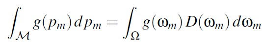
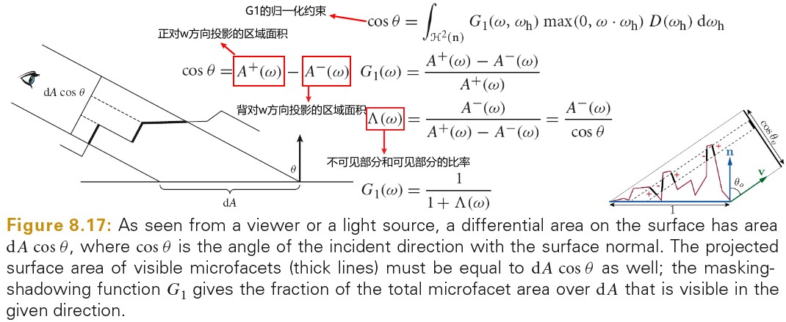

UnderstandingTheGFunction
Table of Contents
- UnderstandingTheGFunction
- Derivation of the Masking Function
- Microfacet-Based BRDFs
- Common Physically Based and Non-Physically Based Masking Functions
- Stetch Invariance of the Masking Function
- The Smith Joint Masking-Shadowing Function
- Discussion and Future Work
UnderstandingTheGFunction note.
<!– more –>
UnderstandingTheGFunction

Derivation of the Masking Function
Measuring Radiance on a Surface
辐射率是从某个单位立体角经过某个单位区域的能量密度。给定微观表面 M 在 wo 方向出射的辐射率为 M 上每小片对应的辐射率乘 wo 方向上投影面积权重再求和。

表面上每个点投影到出射方向的面积是依赖于出射方向的权重因子。 \(\int projArea(p_m)dp_m\) 是投影面积分数的归一化系数，该归一化系数使得上面公式整体为辐射率单位，没有归一化系数就会缺少公式中分母部分，就无法保证能量守恒。
Microfacet Statistics
我们考虑一个平面区域，通常我们称其为几何表面 G，为了方便起见假设该区域的面积为 1 平方米。微表面模型假设真实表面是由一组偏离几何表面的微表面组合而成的。
G 为宏观表面
\(w_g\) 为宏观表面的法线
M 为微表面
\(p_m\) 为微表面 M 上的点
\(w_m\) 为微表面 M 上 \(p_m\) 点对应的法线
微表面理论是散射属性的统计模型，统计数字是定义在法线空间上的(即 球空间Ω上的)。
The Distribution of Normals
为了将微表面上的积分和球上的积分关联起来，定义了法线分布函数 D(m)。D(m)为每平方米几何表面的微观法线分布，其单位为平方米每球面度( \(m^2/sr\) )而不是(1/sr)，其表示微观法线对应的微观表面面积。

狄克拉δ分布函数的单位为其输入参数单位的倒数，上面公式中为 1/sr。
Spatial and Statistical Equations
有了法线分布函数，就可以将表面空间的积分转化为统计空间(球空间)的积分。
Statistical Functions
如果 \(g(p_m)\) 为定义在表面空间上的函数，我们可以按照下面方式将其转化为定义在统计空间的函数 \(g(w_m)\) ：

统计空间积分和表面空间积分的关系满足：

Microfact Projections

A Constraint on the Masking Function
G1 函数需要遵守下面的约束条件，其表示 wo 方向可见微表面投影面积应该和宏观几何表面在该方向的投影面积相等：
基于物理的 G1 函数必须满足上面的约束，但是该约束无法确定唯一的 G1 函数，有无限多个 G1 函数满足该约束。为了确定唯一的 G1 函数，我们引入第二个约束，即选择一个特定的 microsurface profile。可以对此进行直观的理解，法线分布就像一个直方图，其描述的是每个微表面法线所占的比例，其并没有提供这些微表面法线是如何组织在一起的。microsurface profile 可以提供微表面的组织情况。从下图可以看出，microsurface profile 的选择对 BRDF 的结果造成很大影响。
选定 microsurface profile 后，G1 函数就可以完全确定。
Microfacet-Based BRDFs
Distribution of Visible Normals

distribution of visible normals 的归一化非常重要，因为我们使用其作为权重函数来得到平均的辐射率，按照 Measuring Radiance on a Surface 的描述，只有归一化才能保证辐射率单位正确，保证能量守恒。
Construction of the BRDF
上图中公式 25，只模拟了射线第一次弹射后被反射的情况。但是，BRDF 模型应该描述射线离开表面后的分布。射线第一次被反射后的分布和最终离开表面的分布并不相同，因为一些反射的射线会再次碰到微表面，而后被反射到其他方向，如下图所示。因为，此处推导出的 BRDF 只计算一次弹射，需要将多次弹射的射线从该模型中移除，我们通过引入 shadowing 函数来移除多次弹射。实践上我们使用 masking-shadowing 函数 G2 来代替 masking-function 函数 G1。

下图为推导出的只计算一次弹射的 BRDF ，多次弹射通过 G2 函数移除掉了：
Construction of the BRDF with specular microfacets

Construction of the BRDF with diffuse microfacets

上面推导出来的表面 brdf 没有解析解。Oren 和 Nayar 假定法线分布为球面高斯分布，并且 G2 为 V 字凹槽对应的 masking-shadowing function 时，推导出了一个函数，其满足上面方程。
The BRDF Normalization Test
The White Furnace Test
双向散射分布函数是双向反射分布函数和双向透射分布函数的和。当表面不吸收辐射率时，散射射线的分布遵守下面的约束：
当 Fresnel 项始终为 1 时，光线就不会透射，此时 BTDF 为 0，散射模型中只包含反射。这种情况下，brdf 的分布遵守下面的约束，其就是 White Furnace Test 方程：
直观上来看，其表达了下面事实，从出射方向发射的射线将会被散射一次或多次并最终完全离开表面。但是，通常解析形式的 BRDF 模型并不会对微表面上的多次散射进行建模，其使用 shadowing 函数将多次散射移除掉了。因此，通常的 BRDF 不满足 White Furnace Test 方程。
The Weak White Furnace Test
通过将 masking-shadowing 函数 G2 换为 masking 函数 G1，我们可以得到如下 Weak White Furnace Test 方程，忽略掉多次散射的 brdf 也遵守下面的约束：

Summary
下图总结了 BRDF Normaliztion：

Common Physically Based and Non-Physically Based Masking Functions
The Smith Microsurface Profile
Normal/Masking Independence
Smith Microsurface Profile 假定微表面是非自我相关的，即某点的法线(或高度)和邻近点的法线(或高度)无关，如下图中右边图示。

从该模型可以得出 G1 函数独立于法线分布。直观上讲，法线是微表面的局部属性，而微表面上的遮挡则可能发生在微表面的任何地方，其为微表面的距离属性(尽管该距离依然是微观尺度上)。因为，微表面是非自我相关的，局部属性独立于距离属性，因此 masking 函数可以被分解为如下形式：

Derivation of the Masking Function
The Smith Masking Function

Properties
如果我们将推导出的解析函数和测量数据进行比较，将会发现模型预测的结果有一定的正确性，但是不是完全正确。模型是精确推导出来的，但是其只是近似拟合测量数据。
The V-Cavity Microsurface Profile
下图为 The V-Cavity Microsurface Profile

下图为基于 The V-Cavity Microsurface Profile 推导 G1 函数的过程：

Validation
V-Cavity Microsurface Profile 下推导出的 visible normal distribution 如下：

下图展示了 v-cavity 模型下，masking 函数的两种取值情况：
上面的形式由于 min(1, -)项的存在，研究起来比较复杂。但是，V-cavity 模型和 Smith 模型的主要差别在掠射角的情况下。此时上面的 visible normal distribution 函数为下面形式：

下面公式推导了掠射角情况下，V-cavity 模型对应的 visible normal distribution 的归一性：

Properties
V-cavities 模型下的 visible normal distribution 符合归一化约束，但是其并不是物理正确的，掠射角情况下，其模拟的 surface profile 是不真实的。该模型更像一个 normal map 而不是 displacement map,如下图所示：

对于单个微表面，normal 可见性越高则其所占的投影面积越大。但是，在 V-cavities 模型中，不同的 normal 被分开模拟，并且由法线分布来确定其权重，该权重中不包含视角相关的因子（除了背面法线的丢弃）。因此 V-cavity 模型缺少可见性效果，最终模拟的效果更像 normal map。
下图展示了使用各项同性的 Beckmann 分布构造的 BRDF。从左到右，Beckmann 分布分别使用了 V-cavity 和 Smith Masking-Shadowing function。从图中可以看出，随着粗糙度增大，Smith 分布向出射方向偏移。对于非常高的粗糙度值，BRDF 甚至主要为后向散射。这样的效果在测量数据中出现了，但是，V-cavity model 没有再现这种效果。

Non-Physically Based Masking Functions
Definition
基于物理的 Masking Function 是从微表面模型推导，或者是在物理微表面上测量得到的。基于物理的 Masking Function 遵守下面这些约束，非基于物理的 G1 函数则不满足这些约束：

The Implicit Masking Function
Implicit G2 函数假定 G2 中的 |wo.wg||wi.wg| 与 brdf 中分母中的归一化因子约去了。
The Schilick-Smith Masking Function
Schilick 1994 年提出近似 Smith G1 函数的 G1 函数，该 G1 函数被称为 Schilick-Smith G1 函数，Schilick-Smith G1 有三个问题：
- roughness 参数 m 在论文中使用不一致，有的地方 m 表示微表面斜率的均方根（求其均值，再开平方，就得到均方根值）。有的地方 m 则表示粗糙度参数，来自 Beckmann 分布中 \(m = α = sqrt(2)σ\) ，其表示对斜率均方根缩放根号 2。这导致，G1 函数和 D 分布中使用的粗糙度不一致。
- 其使用的 Smith Masking 函数是错误的。Schilick 使用了 1991 年 He Torrance 提供的变形公式，该公式中漏掉了Λ的指数项。
- Schilick 使用了 Smith-Masking 函数的 height-and-normal-averaged 版本，该版本适用于波动光学。几何光学应该使用 height-averaged 版本。
译者书： 不敢相信，尽然这么多错误。
The Kelemen Masking Function
Keleman 2001 年提出了一种 V-cavity 模型 G2 函数的廉价替代方案，如下：
上面的 G1 函数和 V-cavity 的 G1 函数很接近：|wo.wg|为几何表面的投影面积，也为正对 wo 方向可见微表面的投影面积，|wo.wh|为正对 wo 方向微表面的投影面积。|wo.wg|/|wo.wh|就是 wo 方向上可见微表面的概率。
Keleman G1 函数不能保证遵守前面的公式 14。尽管其可以很好近似 V-cavity G1 函数，但是其不是基于物理的。
Stetch Invariance of the Masking Function
Masking Probability Invariance

上图展示了，对于给定的出射方向，拉伸一维结构对微表面 masking 产生的影响。拉伸结构类似于拉伸图片，该操作不会影响结构的拓扑：拉伸后，被遮挡射线依然被遮挡，没被遮挡的射线依然没被遮挡。遮挡概率的重要属性就是结构拉伸的不变性。包括微表面斜率和出射方向斜率，都被按照拉伸因子的倒数进行缩放。
The Distribution of Slopes
Isotropic Shape-Invariant Distributions of Slopes
Shape Invariance
当斜率分布只依赖于 \(tan(θ_m)/α\) 时，斜率分布 \(P^{22}\) 为：
- \(tan(θ_m)\) 夹角为 \(θ_m\) 的法线对应的斜率
- α 粗糙度参数
上面的斜率分布是形状不变的，因为分布的形状始终为 f 的形状，并且形状只会随粗糙度参数 α 缩放。
各项同性的形状不变的斜率分布对结构进行拉伸等价于使用相同的缩放因子缩放粗糙度参数α和出射方向向量的斜率。这隐含说明了 masking 函数只依赖于 \(1/αtan(θ_o)\) , \(1/tan(θ_o)\) 为出射方向的斜率。Beckmann 和 GGX 分布都为形状不变的。
Beckmann Distribution
Λ函数的意义可以参考下图：

GGX Distribution

Shape-variant distributions
需要注意的是并不是所有分布都是形状不变的，Phong 分布就是形状变化的分布。
Anisotropic Shape-Invariant Distributions of Slopes
Shape Invariance
如果使用依赖于方位角的因子缩放形状，则形状不变的分布可以为各项异性的。斜率的权重因子被分配到每个方向上，此时对应的斜率分布为：
Derivation of the Masking Function
上图展示了，通过拉伸表面将各项同性的形状不变分布转化为各项异性的分布。相反地，任何一个各项异性分布的结构可以转变为一个各项同性分布的结构。我们利用该属性来推导出 masking 函数。
从上面的推导可以得出，各向异性形状不变的斜率分布对应的 masking 函数与该斜率分布对应的各项同性分布的 masking 函数相同。唯一的差别是，需要将各项异性表面的粗糙度投影到出射方向上来进行参数化。利用该属性可以推导出各项异性的 Beckmann 和 GGX 分布。
Anisotropic Beckmann Distribution

Anisotropic GGX Distribution
More Generalization
Arbitrary Shape-Invariant Distributions
形状不变的分布的重要属性是，对于任意粗糙度或任意各向异性的结构，求解 masking 函数的所需的所有信息在 1 维的 Λ 函数中都包含了。因此，Λ确定后，可以使用Λ来构造任意粗糙度和任意各项异性的参数化分布。选择任意一个一维的函数 f，可以按照下面方式构造对于的各项异性法线分布：

上面公式中的 c 为该分布的归一化常量系数。关联的一维 \(Λ(\frac(1,α_o*tanθ_o))\) 函数，可以通过合理的多项式拟合出来。
Non Axis-Aligned Stretching

Vertical Shearing and Non-Centered Distributions

上图展示了在竖直方向上对结构进行切变，masking 函数依然保持不变。在竖直方向上对结构侵袭切变等价于将结构的所有斜率偏移一个固定的常量。统一其包含了对所有微表面斜率和斜率关联的出射方向进行了偏移。
需要注意的是，竖直方向的切变不会影响投影的粗糙度 \(α_o\) 以及分布的归一化因子。从法线向量映射为斜率时不会将向量的旋转映射为斜率值的偏移，因此切变不变并不表示旋转法线也不变。
通常，斜率分布中心在 0 附近，这意味着平均表面和几何表面对齐。但是，当宏观表面被某个高频参数放大时，该假设是错误的。bump 贴图，normal 贴图或 displacement 贴图的目的就是通过扰乱宏观 normal 来生成中间法线（mesonormal)。切变不变性表示 non-centered 微表面的 masking 函数和 centered 微表面的 masking 函数相同。
对于 non-centered 分布，另一个需要注意的是，需要使用中间表面（mesosurface）来计算可见投影面积。BRDF 中的 \(cosθ_o\) 应该使用中间表面（mesosurface）的投影面积来代替。
The Smith Joint Masking-Shadowing Function
Separable Masking and Shadowing
该模型假设 masking 和 shadowing 互相独立。该模型过度估算了 shadowing，因为 masking 和 shadowing 总存在一定的相关性。
Height-Correlated Masking and Shadowing
直观来讲，微表面越高，在出射方向上其可见可能性越大，在入射方向上可见可能性也同样增大。因此，masking 和 shadowing 通过微表面的海拔相关联。考虑这种关联性可以得到如下的 G2 函数：
Direction-Correlated Masking and Shadowing
当入射方向和出射方向靠近时，Masking 和 Shadowing 会有很强的相关性。特定情况下，当入射方向和出射方向相同时，从出射方向可见的微表面，从入射方向也可见。此时，应该将 shadowing 函数从 BRDF 中移除，因为 shadowed 的微表面从入射方向和出射方向都不可见。这被称为热点效应：视线和光方向平行时，阴影消失。考虑这种关联性可以得到如下的 G2 函数：
Height-Direction-Correlated Masking and Shadowing
Discussion and Future Work
Deriving the Smith Masking Function for Other Commonly Used Models
前面以及描述了为 Beckmann 和 GGX 分布推导出来的解析形式的 masking 函数。但是，对于其他常用的法线分布，masking 函数并不总是可以按照解析方式积分的。分布的形状不变性，使得其对应的 masking 函数只依赖于斜率和粗糙度的比值。因此，masking 函数中的Λ函数可以被编码为一个一维函数。形状变化的分布，其 masking 函数很难确定。
Correlation of Masking-Shadowing
任意分布对应的关联的 Masking-Shadowing 函数的推导，目前依然是一个开放性问题。
Multiple Scattering
模拟多次散射是改进当前通用 BRDF 模型表现效果的一种可行方式。Phong Beckmann GGX 和实际测量的材质相比较，都有过短的 tails。人们尝试保持标准的 BRDF 形式不变，微调法线分布。但是，通常这样做会让模型失去物理意义。
不要再去开发更复杂的参数模型了，我们应该问问自己，是否测量数据中的特定效果从模型中消失了，然后，扩展模型来代替当前模型。模拟多次散射看上去是一个不错的候选方案，事实上其已经从物理学中被开发出来了。但是，这些模型太复杂了，物理学的目的是精确性而不是易于实现性。